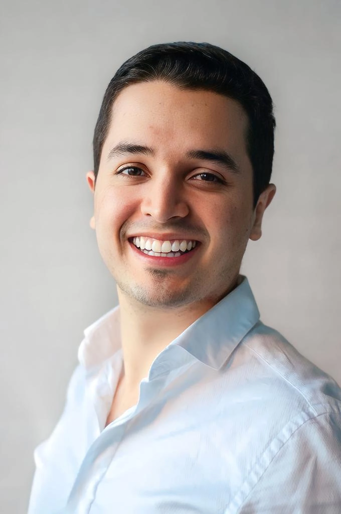
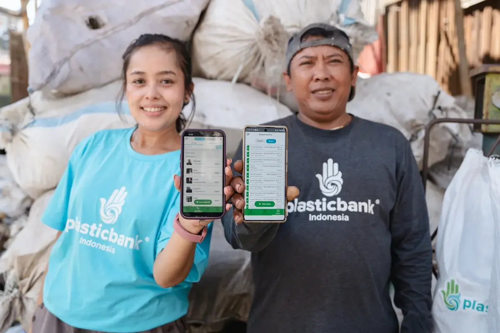
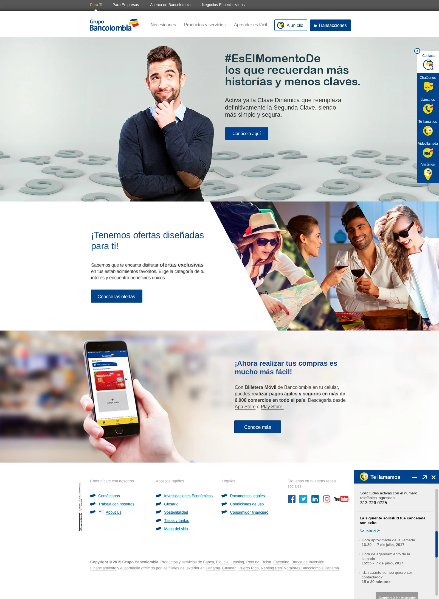
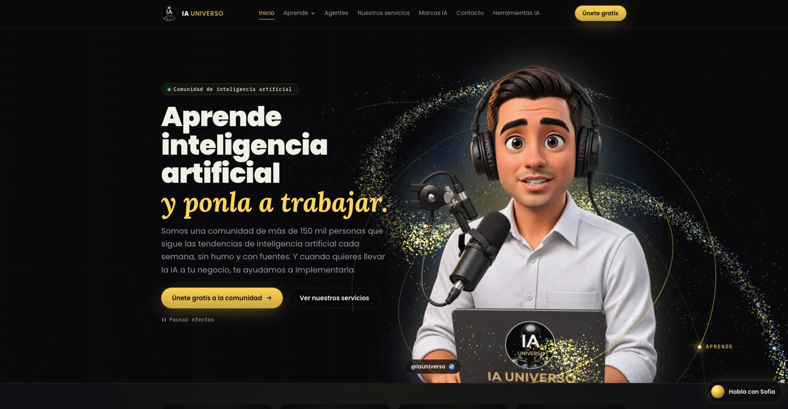
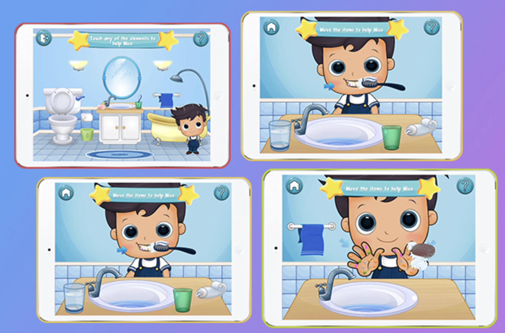
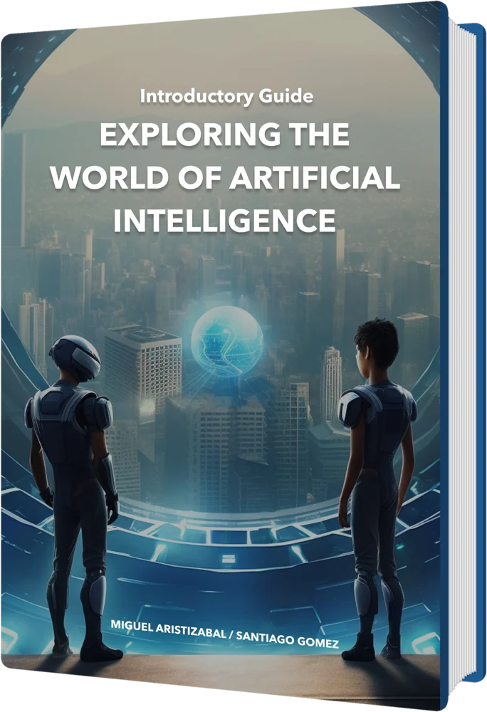

Exploring the World of Artificial Intelligence
I co-authored Exploring the World of Artificial Intelligence with an AI researcher and Ph.D. in Engineering — a practical introduction to a field reshaping how we live and work.
Get the book ↗
Santiago GomezEnglish / Español · Open to remote rolesI turn complex challenges into digital experiences people actually want to use — connecting product strategy, human-centered design and practical AI.




Products, services and communities built through research, iteration and collaboration. Work that has real stakes — and measurable outcomes.
Screens, research and launches from 32 projects for brands like Bancolombia, Papa John’s, Grupo Éxito and Renault.
32 CASE STUDIES · 80 PROJECT IMAGESThrough IA Universo, I translate fast-moving AI developments into practical, accessible Spanish-language content. I bring the same curiosity to product work: learn fast, explain clearly, and create value.
Explore IA Universo ↗Working across borders.
I’m Santiago — a product manager and consultant with 8+ years across product, user experience, growth and AI. I have worked with multidisciplinary teams in global markets, nonprofits, business and the public sector.
More on LinkedIn ↗
I co-authored Exploring the World of Artificial Intelligence with an AI researcher and Ph.D. in Engineering — a practical introduction to a field reshaping how we live and work.
Get the book ↗Peer-reviewed research on the design method behind the Nico app, presented at the 10th Iberian Conference on Information Systems and Technologies.
Read on IEEE Xplore ↗Open to product and UX opportunities, thoughtful consulting partnerships, and projects where technology can improve real lives.